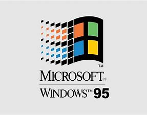

- leeftijd: 65
- waarde: 118,8 miljard(2020)
- vrouw: melinda gates
- kinderen: 3
De Amerikaanse Bill Gates is geboren op 28 oktober 1955. Zijn vader was advocaat en zijn moeder was onderwijzeres. Op jonge leeftijd was hij al geïnteresseerd in technologie en computers. In 1968 was hij bijzonder geïnteresseerd in een terminal die verbonden was met een computer bij General Electric op zijn school. In die tijd trok hij al op met zijn latere zakenpartner Paul Allen. Samen waren de jongens zelfs al bezig om computers te hacken. Hun kundigheid werd opgemerkt door een lokaal computerbedrijf die hun een baan aanbood. Zij moesten fouten (bugs) proberen te traceren. In 1973 begon Bill Gates een opleiding aan de Harvard, maar heeft deze niet afgemaakt. In plaats daarvan heeft hij zich samen met Paul Allen gestort op het ontwikkelen van programma’s voor computers. Zoals u zult begrijpen is dit een goede beslissing geweest. Het bedrijf dat uiteindelijk uitmondde in Microsoft heeft de beide heren miljardair gemaakt. Liefdadigheid Zoals vele andere miljardairs zet ook Bill Gates zich in voor de liefdadigheidsprojecten. In 2003 heeft hij vanuit zijn Bill en Melinda (zijn vrouw) Gates Foundation 168 miljoen dollar geschonken voor een onderzoek naar malaria. Daarnaast heeft de Foundation bijvoorbeeld ook geld geschonken aan een project om te voorkomen dat bepaalde planten en gewassen uit gaan sterven. Zaden van deze planten en gewassen zijn opgeslagen in een bunker in Spitsbergen. De vrijgevigheid van Gates heeft er mede voor gezorgd dat hij samen met zijn vrouw de Persons of the year award heeft gewonnen.
Microsoft (vaak afgekort als MS) is een Amerikaans bedrijf uit Redmond in Washington. Microsoft ontwikkelt, verspreidt, licentieert en ondersteunt een breed scala aan computergerelateerde producten en diensten. Het bedrijf werd opgericht door Bill Gates en Paul Allen op 4 april 1975. Microsoft is 's werelds grootste softwarebedrijf.[3] Microsoft staat ook op de lijst van bedrijven met de hoogste beurswaarde ter wereld, op 25 april 2019 was het meer dan 1 biljoen Amerikaanse dollar waard.[4] Het eerste door Microsoft ontwikkelde product was een BASIC-interpreter voor de Altair 8800 (een zelfbouwcomputer voor hobbyisten). Het slaagde hen erin om de pc-markt over te nemen met zijn besturingssysteem MS-DOS in het midden van de jaren 80 van de 20ste eeuw. Dit systeem werd later opgevolgd door Microsoft Windows. De populariteit van de producten zorgde ervoor dat drie medewerkers miljardairs werden en 12.000 medewerkers miljonair. Sinds de jaren 90 van de 20ste eeuw heeft Microsoft diverse bedrijven overgenomen. In 2016 is Microsoft een dominant bedrijf op de markt van besturingssystemen voor desktop-pc's en de markt van de kantoorsoftwarepakketten (met Microsoft 365). Het bedrijf ontwikkelt ook nog diverse softwarepakketten voor werkstations en servers, en is actief op de zoekmachinemarkt (met Bing), de computerspelindustrie (met de Xbox-, Xbox 360- en Xbox One-spelconsoles), de markt voor online-diensten (via Skype) en mobiele telefoons (met Windows Phone). Ook de markt voor de verkoop van hardware op tabletgebied is betreden met de Microsoft Surface. Tevens verkoopt Microsoft verschillende soorten andere hardware, zoals toetsenborden en computermuizen. Ook de Xbox zelf wordt door Microsoft ontwikkeld.